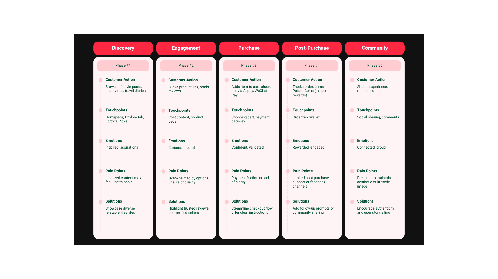
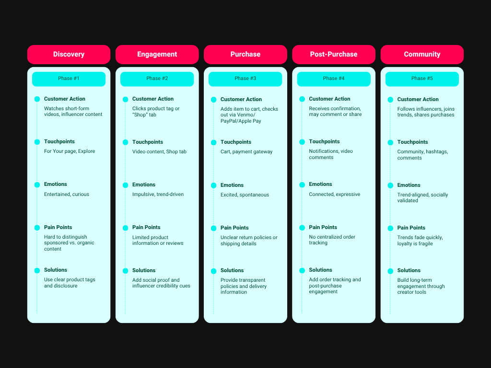

COMPARATIVE USABILITY STUDY OF XIAOHONGSHU VS TIKTOK
Jan - Apr 2025Social Media Platforms as E-Commerce Engines: A Comparative Study of Xiaohongshu, TikTok, and Their Role in Consumer Purchasing Decisions in China, South Korea, and the United States.
Introduction: Mobile Phones as Human Extensions
In today’s world, it’s nearly impossible to find someone without a mobile phone — and for most, it’s a constant companion. Phones have become yes,extensions of the human body, enabling us to text, learn, entertain, and connect from virtually anywhere. Unlike computers, mobile phones are truly “mobile,” allowing people to stay productive and engaged on the go.
This accessibility has transformed industries, especially e-commerce. Consumers now browse and buy products from anywhere: at home, on public transit, even while traveling abroad. As social media platforms integrate e-commerce features, a new hybrid space has emerged: one where digital interaction and commerce converge.
Why This Matters
- Cultural Relevance: Platforms like Xiaohongshu (Little Red Book) and TikTok are reshaping how people shop, socialize, and express identity online.
- Global Impact: These apps are among the highest-grossing globally, influencing consumer behavior across borders.
- Design Implications: Understanding how users engage with these platforms can inform more inclusive, culturally attuned UX strategies.
Research Focus
This study explores how Xiaohongshu and TikTok influence purchasing decisions across two regions:
- China
- United States
By comparing platform features, e-commerce models, and cultural contexts, the research identifies key factors that shape consumer behavior and engagement.
Platform Overviews
Xiaohongshu (Little Red Book)
Xiaohongshu is a leading Chinese social e-commerce platform that blends lifestyle inspiration with online shopping. It’s known for its intimate, review-driven community and focus on beauty, fashion, and luxury goods.
Key Highlights
- Founded in 2013 in Shanghai
- 400+ million registered usersas of 2023
- ~90% of active users are womenages 18-34
- Users access the app6-7 times dailyon average
- Content often prompts reflection on life goals, but can also contribute to lifestyle pressure
TikTok
TikTok is a global short-form video platform that merges entertainment, creativity, and commerce. Its rapid growth and influencer-driven culture make it a powerful force in shaping consumer behavior.
Key Highlights
- Launched internationally in 2017by ByteDance
- Over 2 billion global users
- 136.4 million usersin the U.S. alone
- Americans spend$32 million per dayon TikTok Shop
- China:Home to Xiaohongshu's primary user base and a global leader in social commerce.
- United States:TikTok's largest market, with deep integration of e-commerce features.
- Literature Review:Synthesizes existing research on social media, e-commerce, and consumer behavior.
- UX Comparative Analysis:Personal observations of Xiaohongshu and TikTok to examine:
- Platform features
- User interfaces
- E-commerce integration strategies
- Qualitative Insights:Observer accounts used to explore how each platform facilitates and encourages purchasing behavior.
- Quantitative Data Review:Includes platform statistics and consumer behavior trends across China and the U.S.
- Embedded product linksin posts make shopping feel organic and user-driven
- The platform stores inventory in its own warehouses, ensuring quality control
- Users shop through Xiaohongshu's own stores: Xiahong Shop, Reward Zone, and REDelight
- Navigation includes dedicated shopping tools: Order, Cart, and Wallet
- Potato Coins, a virtual currencfy, add gamified engagement to the experience
- Users shop via product tages in videos or the Shop tab
- Checkout is fast and familiar, using Venmo, PayPal, or Apple Pay
- Influencers drive engagement through unboxings, tutorials, and reviews
- Sponsored content is clearly labeled, but seamlessly woven into the feed
- Homepage features Editor's Picks, Explore, and Nearby tabs
- Navigation is structured around lifestyle discovery and shopping management
- Shopping feels like a natural extension of content browsing
- Homepage includes For You, Live, Explore, and Shop
- Layout supports quick transitions from entertainment to commerce
- Shopping is embedded in the momentum of scrolling and trend engagement
- Relies on user-generated content and peer reviews
- Trust-based model encourages thoughtful engagement and lifestyle alignment
- Visibility is boosted through comments, favorites, and reposts
- Content spreads through viral trends and shared interests
- Algorithm gives every user a chance to go viral, fostering participation/li>
- Tight-knit communities form around themes, driving impulse purchases
- UGC(User-Generated Content): Everyday users sharing real experiences
- PUGC(Professional UGC): Trusted creators and niche influencers
- PGC(Platform-Generated Content): Curated by Xiaohongshu to organize categories
- Viewers comment, ask questions, and send virtual gifts
- Influencers reduce emotional distance through charm and relatability
- The experience feels immersive, communal, and emotionally rewarding
- Personal stories
- Tutorials
- Trend-based challenges
- Posts with high engagement = perceived quality
- Low engagement = skepticism, even if the product is good
- Everyday users can influence just as strongly as influencers
- Constant stimulation (scrolling, sound, visuals)
- Emotional triggers (humor, urgency, FOMO)/li>
- Seamless mobile checkout
- "Almost sold out" labels
- Limited-time offers
- Viral buzz and creator endorsements
- Xiaohongshu builds trust peer reviews, long-form content, and curated shopping experiences
- TikTok drives impulse buying through trends, entertainment, and influencer storytelling
- Design matters — platforms must reflect the emotional tone and shopping habits of their users
- Culture matters — what works in one market may not translate to another
Research Focus & Methodology
Research Question
How do Xiaohongshu and TikTok influence consumer purchasing decisions in China and the United States, and what are the key cultural and platform-specific factors that drive these differences?
As social media and e-commerce become increasingly intertwined, platforms like TikTok and Xiaohongshu have evolved into powerful engines of consumer behavior. Understanding how users engage with these platforms — and how cultural context shapes that engagement — is essential to designing more inclusive and effective digital experiences.
Why These Countries?
Methodology
This study uses a mixed-methods approach:
E-Commerce Integration: How TikTok and Xiaohongshu Turn Browsing into Buying
Social media platforms are no longer just spaces for connection — they’re marketplaces. TikTok and Xiaohongshu have each developed distinct e-commerce ecosystems that blend entertainment, community, and shopping into a single user experience. The following explores how each platform guides users from discovery to purchase, and how design, content, and algorithms shape that journey.
Xiaohongshu: Curated Commerce in a Closed Ecosystem
Xiaohongshu’s e-commerce model is integrated into its platform identity. Users discover products through lifestyle posts and peer reviews, then purchase directly through in-app links, all without leaving the app.
This model builds trust through transparency and community validation — ideal for users seeking authenticity and curated inspiration.
TikTok: Viral Trends Meet Impulse Shopping
TikTok’s e-commerce strategy is rooted in affiliate marketing and in-app shopping, turning entertainment into a frictionless buying experience. Products are discovered through videos, livestreams, and influencer content, often in the heat of a trend.
TikTok’s model thrives on spontaneity, social proof, and the emotional pull of trend participation.
Design that Drives Decisions
Both platforms use interface design to guide users toward purchases; however, this happens in very different ways.
Xiaohongshu
TikTok
Design choices reflect each platform’s emotional tone: Xiaohongshu is aspirational and curated, while TikTok is fast-paced and socially contagious.
Algorithms That Shape Behavior
Behind the scenes, each platform uses recommendation systems to influence what users see, and what they buy.
Xiaohongshu
TikTok
Both platforms use emotional resonance and social dynamics to guide users toward products; however, the tone and tempo are entirely different.
Visualizing the Journey
Xiaohongshu User Journey Map
TikTok User Journey Map
Influencer Culture & Consumer Behavior
Influencers are more than marketers — they’re emotional touchpoints in the user journey. On Xiaohongshu and TikTok, they shape how users discover, evaluate, and emotionally connect with products. This section explores how each platform uses influencer culture to drive engagement and purchasing behavior.
Xiaohongshu: Authenticity, Attachment & Live Streaming
Xiaohongshu’s influencer ecosystem is built on layered content types:
This structure creates a peer-driven environment where product recommendations feel personal, not promotional. Users trust influencers who resemble them — demographically, aesthetically, or emotionally — and that trust directly impacts purchase intention.
"It feels like advice from a friend" says one user
Luxury brands like Chanel and Dior thrive here, not through ads, but through embedded mentions in lifestyle content. Xiaohongshu’s algorithm amplifies high-quality posts, blending aspiration with relatability.
Livestreaming as UX Theater
Livestreams on Xiaohongshu mimic real-life social interactions:
TikTok: Entertainment, Trends & Emotional Hooks
TikTok’s influencer strategy is rooted in storytelling and trend participation. Instead of direct promotion, products are introduced through:
“I didn’t even realize I was being sold something — I just wanted to know what happened next.” says one user
TikTok’s influencers are entertainers first, blending humor, relatability, and aesthetic appeal to create content that feels native to the platform.
Consumer Motivation & Trust
Xiaohongshu: Peer-Based Influence
Users often treat Xiaohongshu as a research tool, browsing reviews, photos, and guides before making decisions. Social proof — likes, comments, reposts — signals trustworthiness and drives herd behavior.
Trust is built through reliability, repetition, and emotional resonance.
TikTok: Trend Participation & Impulse Buying
TikTok’s fast-paced format encourages impulse purchases through:
This behavior aligns with the SOR model (Stimulus → Organism → Response), where immersive environments trigger emotional reactions that lead to action.
Buying becomes a way to stay in the loop — a form of cultural participation.
TikTok amplifies this with:
Even when users feel skeptical, the urgency and social momentum often override hesitation.
User Experience Takeaway
Influencer culture on both platforms is a design strategy — not just a marketing tool. It shapes emotional tone, trust dynamics, and user behavior. Whether through livestream intimacy or trend-based storytelling, influencers guide users through the e-commerce journey in ways that feel personal, immersive, and socially validated.
Cultural & UX Strategy Comparison Visual

Conclusion: What This Means for UX & E-Commerce
This case study explored how TikTok and Xiaohongshu shape user behavior across China and the US, revealing that successful e-commerce isn’t just about features, but about emotional design, cultural alignment, and platform personality.
Key Takeaways:
Social commerce is changing not just how people shop, but how they feel about shopping.